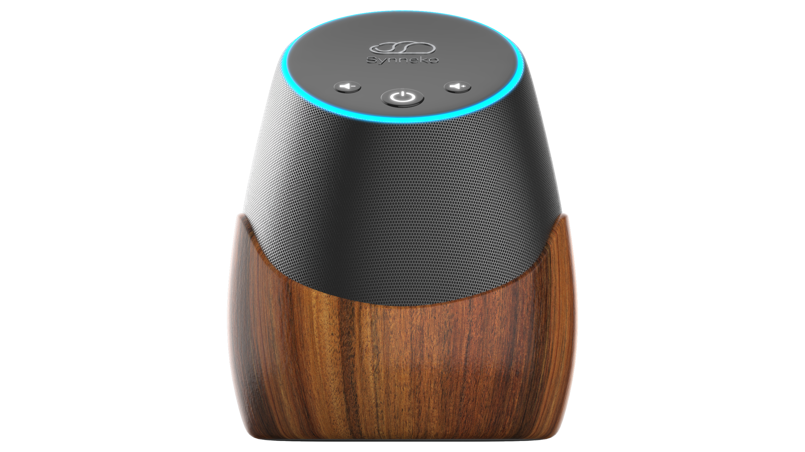
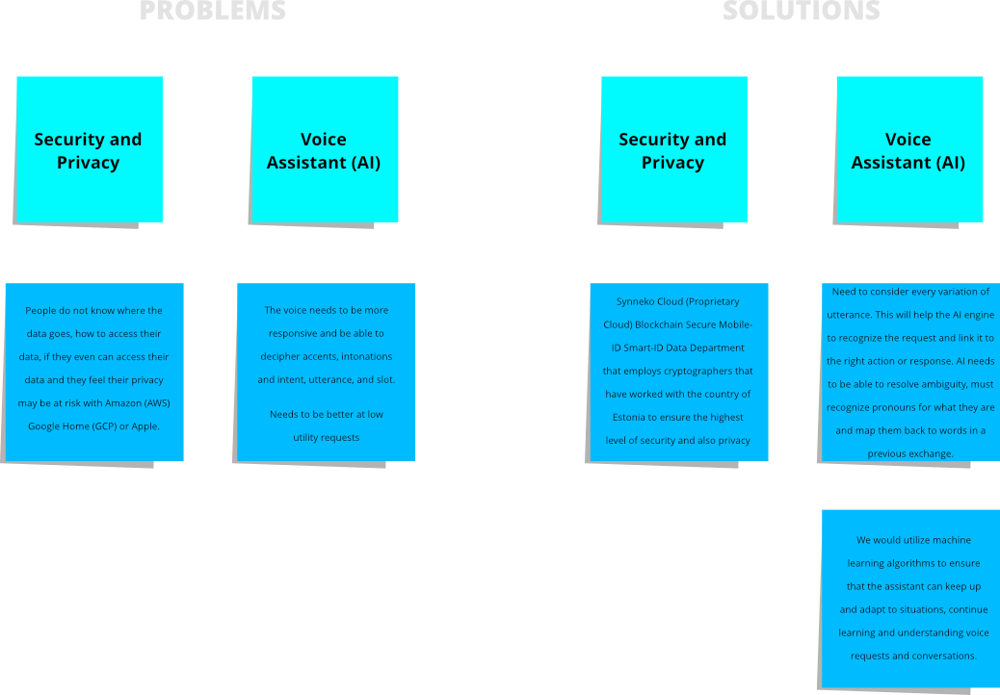
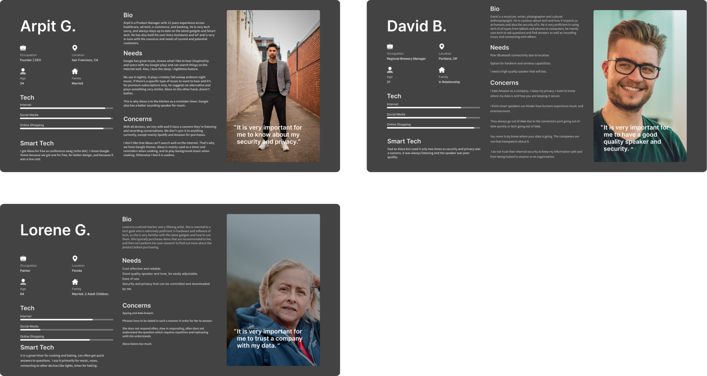
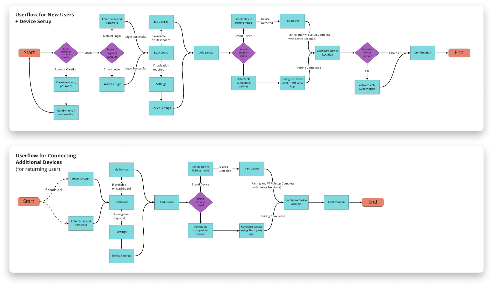
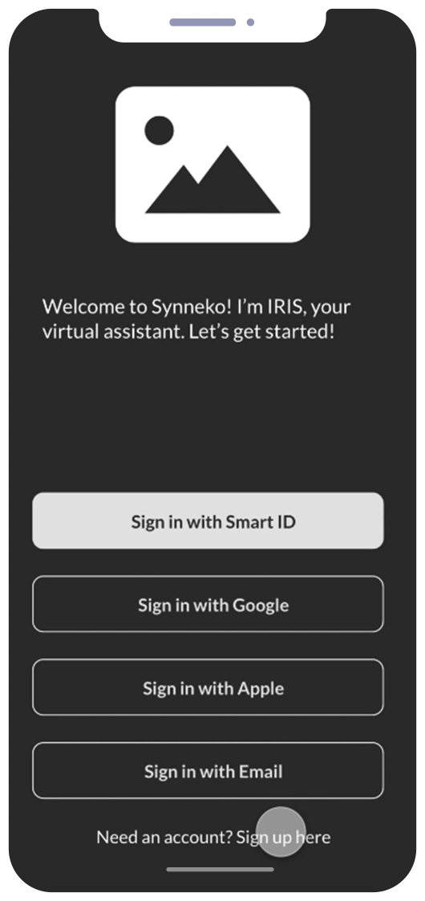
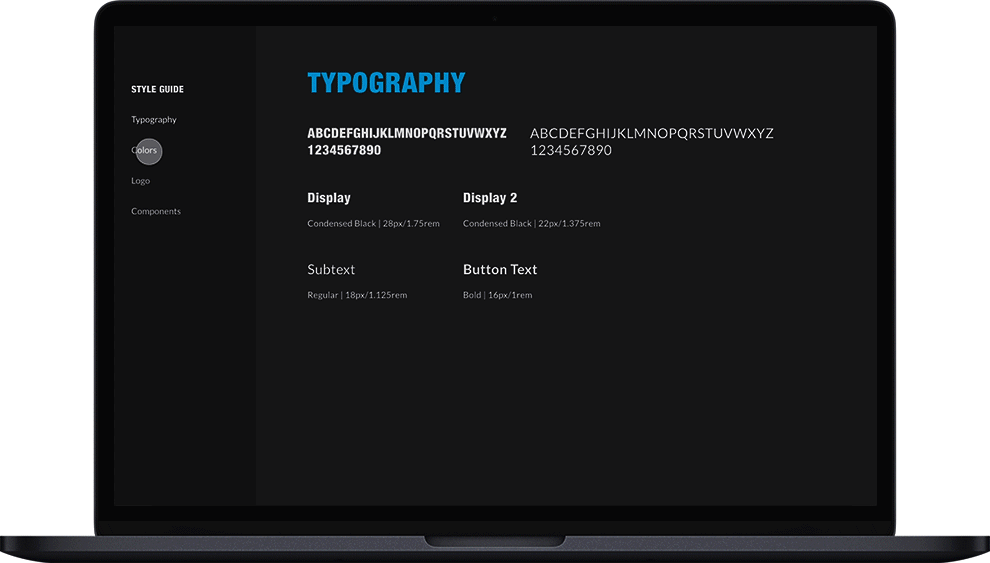
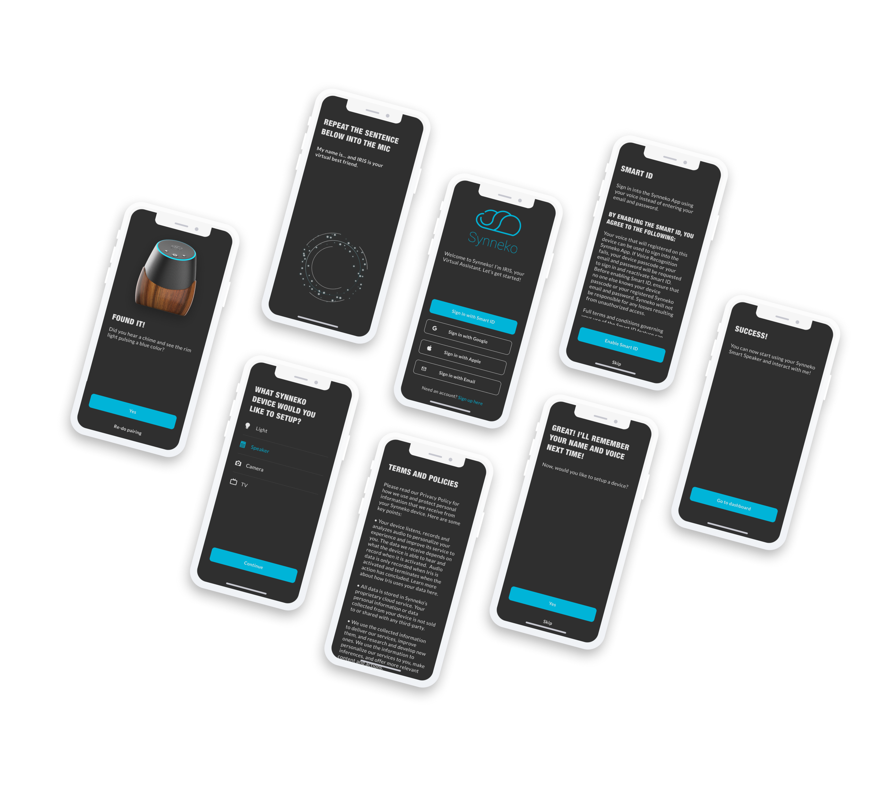
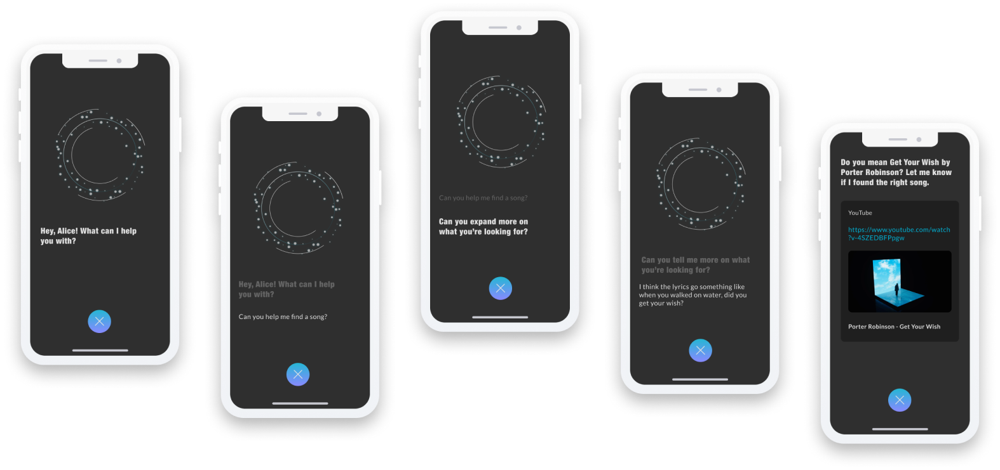

Synneko is a smart speaker device with the goal of having a humanized
AI that can engage in casual conversations with people, instead of responding to specific voice commands.
Your next best friend is an AI. Pretty dope right?

THE TEAM
Mehzabeen Malik
Project Manager
Victoria de Aranzeta
UX Researcher
Josefa Pia Kahl
UX Researcher & UX Designer
Ryan Rosales
Product Designer
Jaskaran Singh Sondhi
3D Artist and UX Designer
I was a Product Designer and along with a team of researchers and UX designers, we set
out to produce a new smart speaker device for the current market.
I was involved in all stages of product design.
• Assisted in research studies and branding
• Prototyped
• Usability Testing
• Lead the visual design
Timeframe: September 2020
Research
SMART SPEAKER AND IOT USE
Smart speakers and IoT devices are appearing in more households in recent years as people
are looking to enhance their daily routines in the comfort of their own homes.
We interviewed 5 people who use smart speaker brands from Google, Amazon and Apple and
they expressed concern toward their privacy and the AI command system.
Users were worried that the devices were passively “listening” to household conversations and collecting
private information. In addition, voice AIs required very specific commands to function properly.

THE SOLUTIONS
An onboarding experience which guarantees confidentiality of private information and a humanized AI.
This in-depth process would allow users to gain trust towards the Synneko brand.
Our Terms and Policies state that information will only be collected to improve future updates, devices, and will not be sold to or utilized by any third-party.
The AI, IRIS (Intelligent. Rad. Interactive. System.), would be humanized by understanding various utterances and speech. This would not bind her to voice commands,
resulting in a conversational and responsive virtual best friend.
PERSONAS

USERFLOW

Design
WIREFRAME AND USABILITY TESTING
We tested early wireframes with 5 users.
5/5 - Liked the in-depth registration and device setup process.
3/5 - Found some steps as “filler” and did not contribute to the process.

BRANDING STYLE GUIDE

DESIGN SOLUTIONS
Within the onboarding experience, users will encounter two features that would guarantee the safety of their private information:
Smart ID and Terms and Policies.
Smart ID enables users to log-in to the app via their voice; which would help eliminate identity theft.
Our Terms and Policies clearly states that information and data would be stored in a proprietary cloud system, used only to
improve future devices, and would not be leaked to any third-party.

A NEW ARTIFICIAL EXISTENCE
Interacting with IRIS, the advanced AI is able to understand various utterances and speech.
This allows users to engage in casual human conversations with her and she can provide legitimate answers
to even the most vague, poorly-worded, and random questions.

Conclusion
MOVING FORWARD
As we gather more data to improve future updates, we will
continue iterating and conducting user testing.
Overall, I learned:
Remain transparent with the product team and stakeholders as disconnects happen quite often.
Thankfully, we recovered quickly and it did not hinder our schedule.